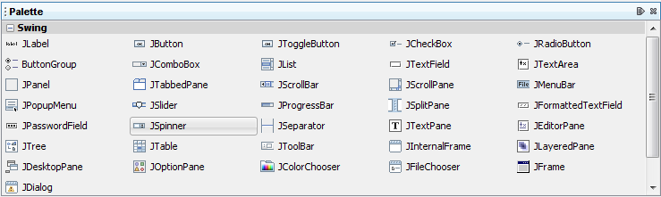
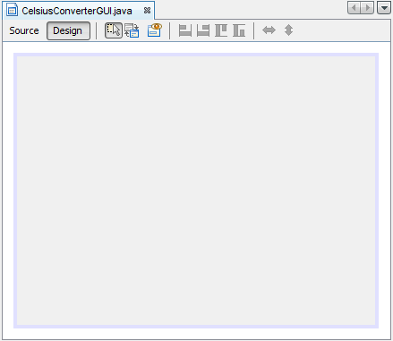
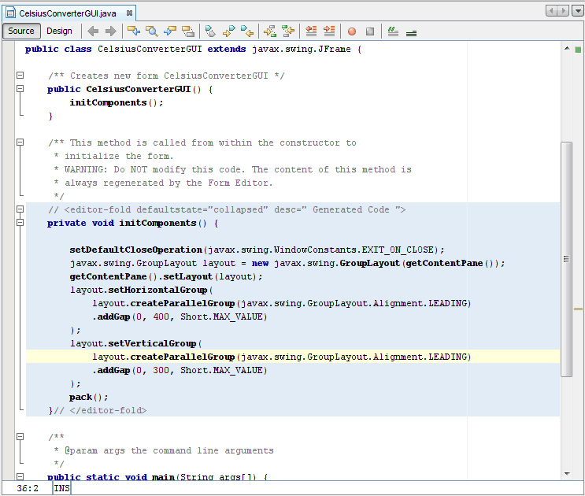
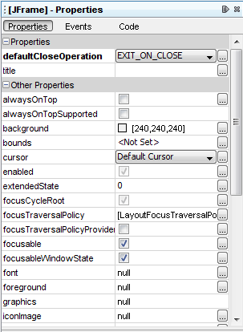
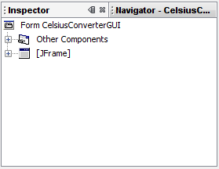

No es necesario aprender cada característica del EID NetBeans antes de explorar sus capacidades de creación del IGU. En realidad, las únicas características que realmente necesita entender son la Paleta, el Área de Diseño, el Editor de Propiedades, y el Inspector. Describiremos estas características abajo.
La Paleta contiene todos los componentes ofrecidos por la IPA de Swing. Puede probablemente adivinar ya para qué
son esos componentes, incluso si ésta es la primera vez que los usa (JLabel es una etiqueta de
texto, JList es una lista desplegable, etc.).

Esta figura ha sido reducida para que encaje en la página.
Pulse en la imagen para verla en su tamaño natural.
Desde esta lista, nuestra aplicación usará sólo JLabel (una etiqueta de texto básica),
JTextField (para que el usuario introduzca la temperatura), y JButton (para convertir
la temperatura de Celsius a Fahrenheit).
El Área de Diseño es donde usted construirá visualmente su IGU. Tiene dos vistas: vista de fuentes, y vista de diseño. La vista de diseño es la que se muestra por defecto, como se muestra debajo. Puede alternar entre vistas en cualquier momento pulsando sus pestañas respectivas.

Esta figura ha sido reducida para que encaje en la página.
Pulse en la imagen para verla en su tamaño natural.
La figura de encima muestra un objeto único JFrame, representado por un gran rectángulo sombreado
con un borde azul. El comportamiento comunmente esperado (tal como terminar cuando el usuario pulsa el botón
"cerrar") es autogenerado por el EID y aparece en la vista de fuentes entre secciones azules no
editables conocidas como bloques vigilados.

Esta figura ha sido reducida para que encaje en la página.
Pulse en la imagen para verla en su tamaño natural.
Un vistazo rápido a la vista de fuentes revela que el EID ha creado un método privado llamado
initComponents, el cual inicializa los diversos componentes del IGU. También indica a la aplicación
que "termine al cerrar", ejecute algunas tareas específicas de la disposición en pantalla, y agrupa
los componentes (que pronto serán añadidos) juntos en la pantalla.
No sienta que necesita entender este código en detalle; lo mencionamos aquíe simplemente para explorar la pestaña de fuentes. Para más información sobre estos componentes, vea:
Cómo Hacer Marcos (Ventanas Principales) y Disponer Componentes Dentro de un Contenedor.
El Editor de Propiedades hace lo que su nombre indica: le permite editar las propiedades de cada componente. El
Editor de Propiedades es intuitivo de usar; en él verá una serie de filas — una fila por propiedad —
que puede pulsar y editar sin introducir el código fuente directamente. La siguiente figura muestra el Editor de
Propiedades para el nuevo objeto JFrame añadido:

Esta figura ha sido reducida para que encaje en la página.
Pulse en la imagen para verla en su tamaño natural.
La captura de arriba muestra las diversas propiedades de este objeto, tales como el color de fondo, el color de primer plano, la fuente, y el cursor.
El último componente del EID NetBeans que usaremos en esta lección es el Inspector:

El Inspector
El Inspector ofrece una representación gráfica de los componentes de su aplicación. Usaremos el Inspector sólo una vez, para cambiar unos pocos nombres de variables a algo distinto de sus valores por defecto.